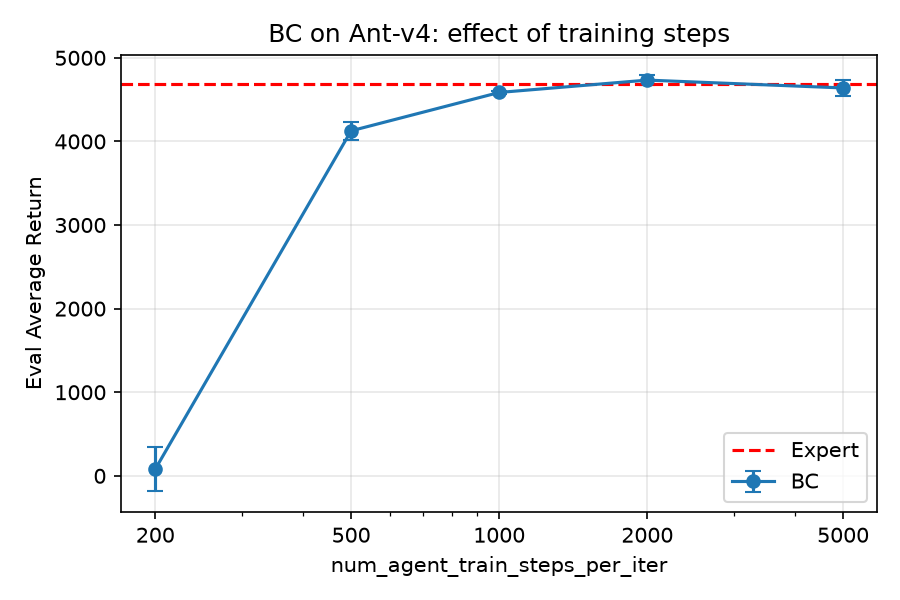
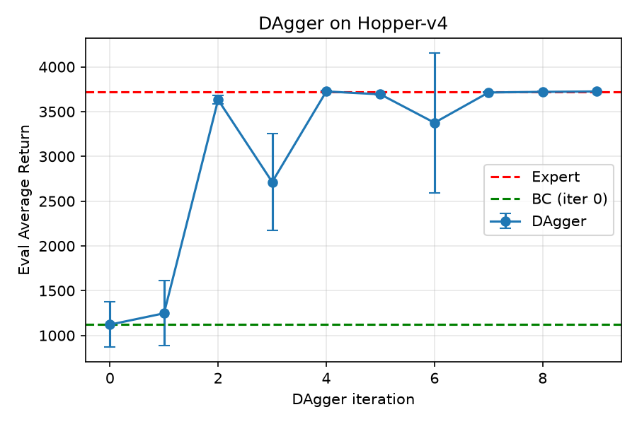
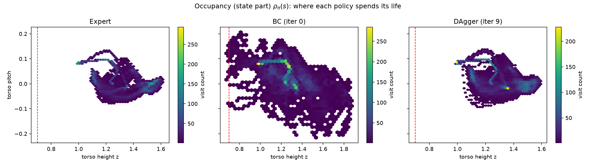

没有奖励信号、只有专家演示,怎么让神经网络学会专家行为? 主线答案:把模仿当监督学习(BC),再直视它唯一会犯的绝症——分布偏移(DAgger)。
强化学习的标准设定是"环境给奖励,智能体自己摸索"。HW1 把奖励信号抽掉: 只给你课程组用 RL 预训好的专家策略和它的演示数据(四个 MuJoCo 环境: Ant 四足稳定、Hopper 单足易摔、Walker2d 双足、HalfCheetah 不终止), 要求用纯模仿让网络复现专家行为。
这个问题值得研究,不只是因为简单——它是几乎所有现代机器人学习管线的入口形态: 遥操作演示、真机示教、把"贵策略"蒸馏成"便宜策略"(我后来在 VLA 方向的 ACT/Diffusion Policy 与 LeRobot 复现,都是同一条模仿学习谱系)。
本讲的主线矛盾一句话就能说完:BC 在 Ant 上一次到位(97.9%),在 Hopper 上只剩 30%—— 同一个算法、同量数据,为什么两副命运?答案不在模型,在分布。
专家给你一堆 (状态, 动作) 对。最自然的模仿方式:让每个专家动作,在你的策略下概率最大。写成式子:
max_θ E_(s,a)~D [ log π_θ(a|s) ]
| 符号 | 名字 | 通俗含义 |
|---|---|---|
| θ | theta | 神经网络的全部权重——我们唯一能拧的旋钮 |
| π_θ(a|s) | 策略 pi | 在状态 s 下,网络给动作 a 打的"概率分" |
| D | 数据集 | 专家演示:一堆 (状态 s, 专家动作 a) 对 |
| E[·] | 期望 | 对数据集里的样本取平均 |
| log | 对数 | 把概率连乘变连加;小概率的错误会被放得很大(罚得重) |
这个式子就是最大似然估计(MLE):让"标准答案"在你的答案库里尽量好查。 它的全部信息只有"专家在 s 做了什么"——没有奖励、没有后果、没有纠错。 所以 BC 学到的是条件分布"专家在状态 s 倾向做什么":是相关,不是因果。
连续动作没法列概率表,就让网络输出一个高斯分布:
π_θ(a|s) = N( μ_θ(s), diag(σ²) ) a = μ_θ(s) + σ ⊙ ξ, ξ ~ N(0,1) (网络出均值 μ,采样时加点噪声)
对应的损失函数(负对数似然,NLL):
−log π(a|s) = Σ_j [ (a_j − μ_j)² / 2σ_j² + log σ_j + 常数 ]
逐项看:第一项把 μ 拉向专家动作,且按 1/σ² 加权——网络越有把握的维度,越用力拉; 第二项 log σ 是"防塌缩阀":阻止网络靠把 σ 缩到 0 来作弊(那样 −log π 会爆)。 当 σ 固定为 1 时,NLL 正好就是 MSE——均方误差是负对数似然的特例, 这就是为什么有人管 BC 叫"回归"。
没有。BC 只学了"专家长什么样"(条件分布),它不知道: ① 哪个动作好(没有奖励概念);② 动作的后果(训练时环境不在场); ③ 错了怎么救(专家数据里没有"救"的示范)。 所以它怕"没见过的地方"——这正是③要讲的事故(分布偏移)。
协议(每轮只做一件事——换一批"考试范围"):
第 0 轮:用专家数据训出 π₁(就是 BC)
第 k 轮:π_k 自己跑 → 收集它踩到的状态
专家给这些状态重新打标签 → 并入数据集(老数据不删)
继续训练 → π_{k+1}
数学原理:DAgger 求的是不动点——"在自身诱导的状态分布上表现良好的策略"。 不动点没法一步解出(策略变,分布就变),只能迭代逼近: 修完 A 类错,策略走得更远,踩到 B 类新状态,再修 B 类……直到策略不再访问未覆盖的状态。 老数据永远有效,因为状态是物理事实、标签是专家函数的值,二者都不随策略版本过期。
| BC | DAgger | |
|---|---|---|
| 产物 | 一个"像专家"的条件分布 | 一个"在自己分布上也好"的策略 |
| 理论损失界 | O(T²ε)(稠密奖励世界) | O(Tε) |
| 成本 | 极低(一次监督学习) | N 倍(每轮都要 rollout + 问专家) |
| 天花板 | 都是专家本身——模仿不会比老师好(它是"下限复制器") | |
工程铁律(⑤ 会看到证据):永远先跑 BC——几分钟成本,它是所有后续决策的基准线; 不够用再上 DAgger(任务对误差敏感、专家数据覆盖窄的时候)。
普通监督学习里,模型不影响测试数据的来源(猫狗分类器不改变测试图片)。 但 BC 里,你的策略决定你测试时遇到什么状态:训练用的是专家走过的状态, 测试时策略却走自己的路——一步踏错,就进入专家从没去过的地方,在那里 BC 没有任何指导, 猜错一步偏得更远。这就是 covariate shift,而且它是结构性的: 要在自己的分布上收数据,得先有自己的策略——死循环,DAgger 用迭代打破它。
设模仿的分歧率 ≤ ε。用耦合+并集界可证:两策略的 t 步状态分布差 ≤ 2Tε(漂移量); 只有末态奖励时性能损失 O(Tε);稠密奖励时每步都计,损失叠成 O(T²ε)(损失量)。 MuJoCo 全是稠密奖励,所以 Hopper 生在 O(T²ε) 的世界:T=1000 时,T 和 T² 是 1000 倍的差距—— 这就是 30% 和追平专家之间的距离。
| 族 | 在哪动手 | 治什么 | 代表 |
|---|---|---|---|
| 改数据分布 | 训练分布→测试分布 | 分布偏移(O(T²ε)→O(Tε)) | DAgger、扰动+恢复标注 |
| 改数据筛选/加权 | 数据质量 | 脏演示数据 | filtered BC、RWR |
| 改模型 | 无记忆→序列 | 部分可观测/长时依赖 | Decision Transformer、VLA 主线 |
| 改匹配目标 | 逐点回归→分布匹配 | 模式平均化(单高斯的折中) | GAIL、AIRL |
| 改问题本身 | 模仿→强化 | 目标错位、可超越专家 | REINFORCE→PPO、DQN/SAC(第 2/3 讲) |
要点:DAgger 是唯一针对病根的;GAIL 匹配整个占有测度(BC 只匹配条件半边 π(a|s),对"你去哪"无能为力); "先模仿预训练、再 RL 微调"是工业标准配方——第五族就是后面两讲。
让策略跑很久,每走一步就在 (s,a) 处撒一粒沙,沙堆形状即占有测度 ρ_π(s,a)。 三个性质值得背:① ρ = 状态分布 × 策略;② 回报是 ρ 的线性函数(J = T·E_ρ[r])—— 所以"占有测度相同 ⇒ 回报相同",这是"分布匹配即模仿"的理论依据; ③ covariate shift 就是 ρ 的状态边际漂了。我们的概念图 4(见⑤)把这件事画成了看得见的环。
| 任务 | BC 回报 | 专家回报 | 相对专家 | 平均回合长度 |
|---|---|---|---|---|
| Ant-v4 | 4585.8 ± 16.0 | 4681.9 ± 30.7 | 97.9% ✅ | ~1000 |
| Hopper-v4 | 1121.0 ± 253.0 | 3717.5 ± 0.4 | 30.2% ❌ | 353 |
| Walker2d-v4 | 1707.5 ± 1464.4 | 5383.3 ± 54.2 | 31.7% ❌ | 394 |
Hopper:1121 → 1247 → 3632 →(震荡)→ 3725.3 ± 2.8——两轮从 30% 拉到 98%, 最终追平专家且方差更小。读法:看起点到平台的抬升,不看逐轮单调(移动靶注入新数据,回落是正常波动)。 Ant:BC 已 97.9%,DAgger 贴专家线小幅波动——验证了"DAgger 的收益 ∝ BC 的分布失配程度"。



稳定形态下 BC 一次到位 ≈ 专家水平。
同一环境 BC 仅 30%,分布对齐后追平专家。
hw1/cs285/ ├── scripts/run_hw1.py 主循环:建环境→建策略→加载专家→[收数据→训练→评估]×n_iter ├── policies/MLP_policy.py 策略网络:forward / get_action / update(三角分工) ├── policies/loaded_gaussian_policy.py 专家加载器(只读的"改卷老师") ├── expert_data/*.pkl 专家演示(4 环境,各 2 条轨迹×1000 步) └── infrastructure/ replay_buffer(双表示容器)、utils(rollout)、logger
transition 五元组 (s,a,r,s′,done)
→ path 字典 {observation, action, reward, next_observation, terminal}(注意 next_obs[t] = obs[t+1],错位一位)
→ 数据集 list[path](pkl)
→ replay buffer 拍扁成大数组(为随机抽批)
→ 训练批次 obs (B,ob_dim) + act (B,ac_dim)
HW1 只用 obs+action 两列;reward 仅评估用,next_obs/terminal 留给第 2、3 讲。
| 函数 | 干什么 | 关键 |
|---|---|---|
forward(obs) | 纯函数,可微,产出当前预测 | 不改任何东西 |
update(obs, actions) | 调 forward 拿预测,与专家动作算 loss,backward+step | 唯一更新的是网络权重 θ |
get_action(obs) | 交互接口:单个观测进,采样,单个动作出 | 面向"活"的环境;update 面向存储的批次 |
梯度为什么对 μ 求不对 a 求:a 是常量数据,优化的落点永远是我们能控制的 θ(链:loss→μ→θ)。 为什么 loss 不能直接写 μ−a:带符号差会正负抵消,必须先消符号(平方/概率化)。
返回均值张量只能配 MSE(σ 恒为 1);返回 Normal(μ,σ) 分布对象才有概率语义:
NLL、采样、以及第 2 讲的 log π、第 3 讲的 rsample/entropy 全都建立在它上面——
这是贯穿三讲的同一个小设计。
run_hw1.py 每轮的分叉只有一处:itr 0 读专家 pkl(BC 热身);itr>0 用当前 actor 采样轨迹,
再逐条 path["action"] = expert_policy.get_action(path["observation"]) 重标。
训练块完全复用——它不关心 buffer 里的数据来自谁。
新数据仍来自专家的占有测度,分布偏移本身没变,学习者踩到的状态依旧超纲。 要修的是"数据从哪来",不是"数据有多少"——步数扫描的平台期也是同一个证据。
状态是物理事实,标签是专家函数的值——二者都不随策略版本过期。 若标签是旧策略自己的动作,老数据才有毒(模仿过去更差的自己)。 聚合还带来覆盖并集(历代策略访问状态之和 ⊇ 当前分布)与防遗忘两重好处。
buffer 是"历代策略占有测度的混合",滞后于当前策略——新策略刚到达的区域样本稀薄, Q 在那里只能外推。所以 off-policy 也得持续付"探索预算"(ε-greedy / 熵)维持覆盖。